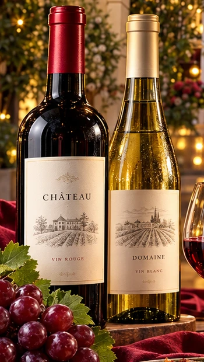
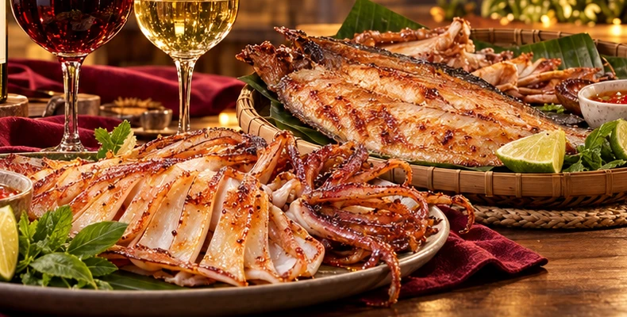
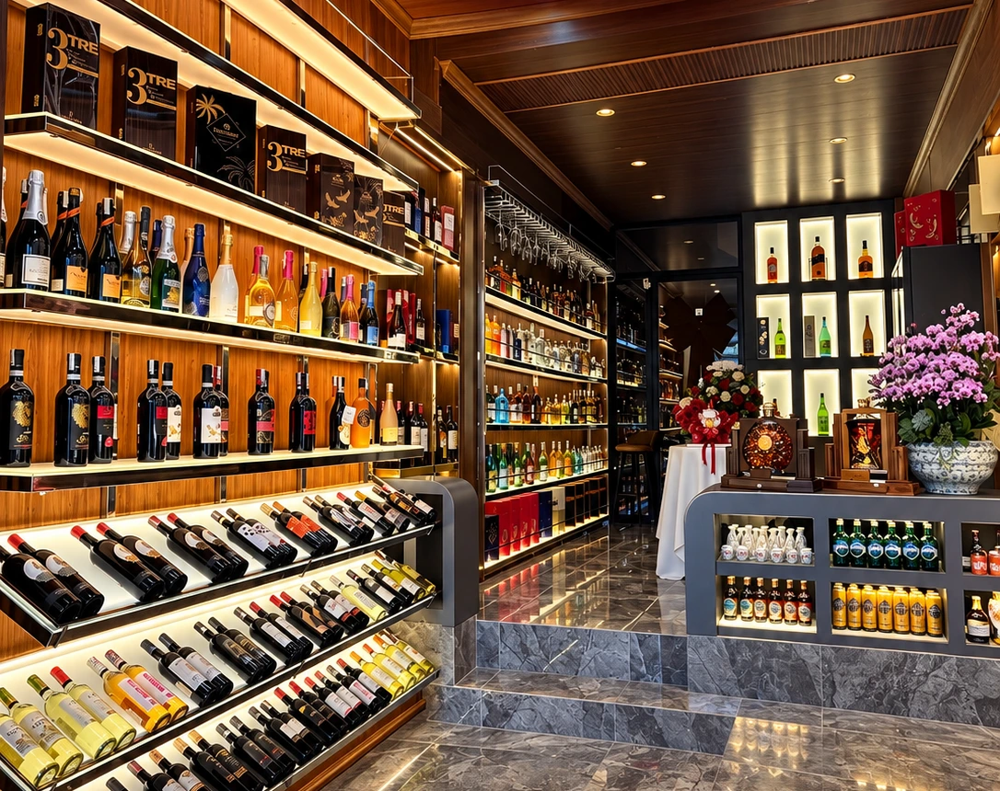

01 / WINES
Vang cho từng cuộc hẹn
Vang đỏ, vang trắng và những lựa chọn để cùng thưởng thức hoặc gửi tặng. Chia sẻ khẩu vị và ngân sách để chúng tôi tư vấn phù hợp.
Từ những chai vang cho buổi gặp gỡ đến hải sản một nắng đậm vị biển Việt — tìm lựa chọn của bạn tại NAMY MART.

Khám phá các nhóm sản phẩm của cửa hàng. Liên hệ để được tư vấn lựa chọn, giá và tình trạng còn hàng.

Vang đỏ, vang trắng và những lựa chọn để cùng thưởng thức hoặc gửi tặng. Chia sẻ khẩu vị và ngân sách để chúng tôi tư vấn phù hợp.

Hải sản một nắng cho bữa ăn, buổi gặp gỡ hay món quà mang hương vị Việt Nam. Liên hệ để biết các loại sản phẩm hiện có.

NAMY MART là điểm dừng chân dành cho người yêu những hương vị mới và những món quà được lựa chọn bằng sự quan tâm. Chúng tôi giới thiệu rượu vang nhập khẩu cùng hải sản một nắng mang đậm dấu ấn biển Việt Nam.
Tại 208 Đỗ Bá, chúng tôi mong mỗi lần ghé thăm đều là một trải nghiệm thoải mái: cùng trò chuyện về nhu cầu, tìm hiểu sản phẩm và lựa chọn phù hợp cho bạn.

Mở camera điện thoại và quét mã QR trong ảnh để chia sẻ đánh giá của bạn về cửa hàng.
Mở poster đánh giá ↗